6 Getting to Know Your Data
6.1 Learning Objectives
Understand what the assumptions are for parametric tests.
Diagnose problems with normality (such as skew or kurtosis) in a data set.
Diagnose problems with heteroscedasticity in a data set.
Use data visualization to understand the nature of data so you can diagnose and resolve problems
Apply methods for resolving data that is non-normal and/or heteroscedastic
We’ve spent a lot of time familiarizing ourselves with the concept of data and how statistics help us bridge the gap between a theoretical population and a concrete sample. We’re almost ready to start diving into learning about specific statistical tests, but first, I must emphasize the importance of getting to know a data set and getting a data set ready for analysis. Quite frankly, data cleaning and preparation is much more difficult and time-consuming than running the analyses! Once you know how to run a test, it’s quite easy to do so. But if our data is a bunch of garbage, we can’t expect to get meaningful results from our analysis, so data cleaning and preparation is a tedious but vital step of the process.
6.2 Assumptions of Parametric Tests
The vast majority of statistics I cover in this text are what are known as parametric tests – that is, at least one variable is a continuous variable that we’d expect to be normally distributed in the population. This is generally true in most social sciences – most variables will have the majority of people clustered near the mean, with smaller proportions of people in the very high and very low ends of that variable. So, parametric tests are quite common in social science fields. However, in order to confidently use a parametric test, there are a few assumptions (i.e. expectations) we have of our continuous variables.
6.2.1 Assumption 1: One Variable is Interval or Ratio Data
I noted in the previous section that parametric tests have at least one variable that is continuous. As you might recall from our previous chapter, this means that our data needs to be either an interval or ratio data. For the most part, this requirement is straightforward – if none of your variables are continuous, you need to find a non-parametric test to use. One area where some people get into trouble is assuming that ordinal variables are continuous – they are not! You should not treat ordinal variables the same way because with ordinal variables, we don’t have precise information about the amount of the variable at hand – we only know the rank order of participants, so it is not appropriate to pretend that ordinal variables are appropriate for parametric tests.
6.2.2 Assumption 2: Errors should be independent
We also want to make sure that my observations are independent of one another. In other words, one participants’ score should not affect the score of another participant. If I found out after the fact that, for example, one of my participants was sharing answers on a test or that they were pressuring other participants to answer in a certain way, this is a problem for my data! In some cases, this makes my data unusable, because by allowing participants to influence one another, they’ve introduced systematic bias into the data, which makes it difficult to distinguish error from effects.
Sometimes, this assumption is impossible to avoid because of something called dependencies in data. For example, if I’m collecting data on workers in a manufacturing plant, many employees might share the same supervisor, and perhaps there’s something about that supervisor that causes them to answer in a certain way. Or, if I’m measuring the same person multiple times, their responses might share error because some people have certain tendencies in how they respond (e.g., some people stick to the middle of a scale, others are more strict or lenient in their ratings). While this does violate an assumption, if we have information collected about how errors might be related (e.g., we keep a record of employee supervisors or we have an ID variable that allows me to track one respondent’s ratings across multiple time periods) we can incorporate those variables into our analyses. One solution to this problem is something known as multi-level modeling, which is far beyond the scope of this book. But suffice it to say that there are ways that we can work with this assumption if we’re careful about recording potential dependencies in our data.
6.2.3 Assumption 3: The data is normally distributed
We’ve talked a little bit about normal distributions, but as reminder, the normal distribution is where our data is symmetrical, with most people clustered close to the mean, and the number of people tapering out as we get further from that mean.
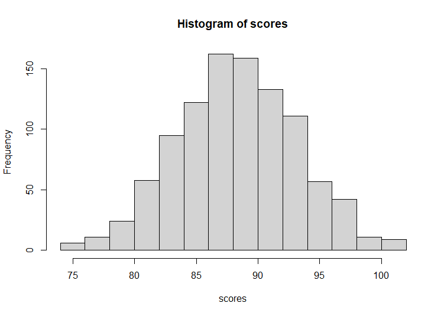
In small samples, this normal curve can look a little funky, but we typically hope it will somewhat replicate a normal curve. It won’t always! Sometimes we might have an outlier or an extreme value where one data point is very far away from everything else, which will pull the mean away from the center. We might also have a ceiling effect or a floor effect, where one end of our normal distribution gets squashed. For example, household income often has a positively skewed distribution, where the curve is flattened on the left side (because minimum wage produces a floor effect) and the tail might be very long on the right side if we have a few millionaires in our sample.
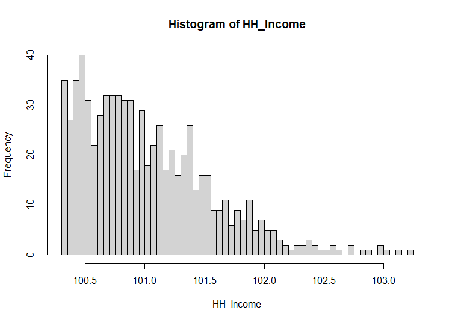
Exam scores can sometimes produce a negatively skewed distribution, where the right side of the distribution is squashed (especially if my test was too easy or students cheat, so too many people get perfect scores) and the left side has a long tail (a few students getting a zero on the test because they missed it).
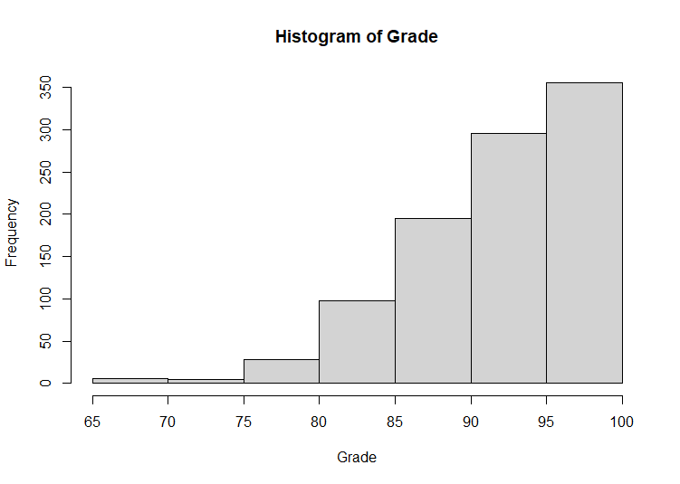
Sometimes we might also get kurtosis in our data, where we don’t have many people right in the middle of my distribution, which produces a flat top and thicker shoulder and tails on my distribution (we sometimes call this platykurtic). Or alternatively, maybe I have too many people in the middle of my distribution, producing a sharp peak in the middle, with short tails (also known as leptokurtic).
This assumption we will want to check prior to doing any analyses, as if we violate that assumption, we might want to make some adjustments or use a different type of test. More on this later!
6.2.4 Assumption 4: We have homogeneity of variance (homoscedasticity)
Homoscedasticity is a long and fancy name for a relatively simple concept: We want the variance in our sample to be roughly similar at all values of a predictor. Consider the graph below:
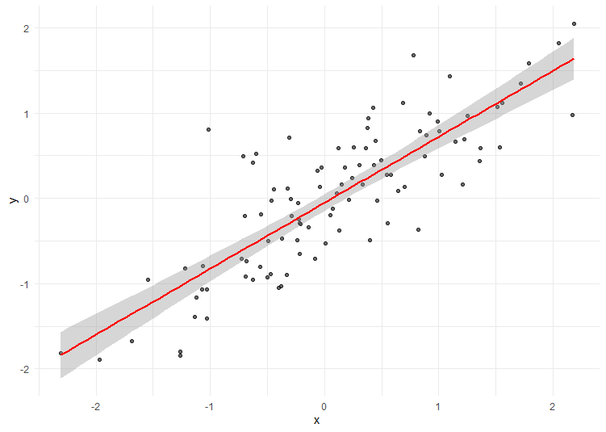
In Figure 6.2, you can see that the data spreads out similarly from the line as you move from left to right. This is good – it shows homogeneity of variance, or homoscedasticity, which means our assumption is met.
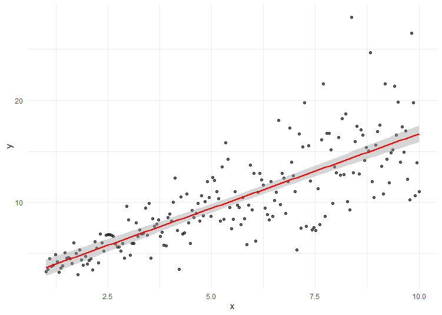
In Figure 6.3, you’ll notice that the points sit very close to the line on the left side, and spread out a lot toward the right side, producing a trumpet shape. This indicates that we do not have homogeneity of variance (heteroscedasticity). This is not so good! What this means is that at the low end of our predictor, we’re pretty accurate with how people will score on our outcome, but we are less and less accurate as our predictor increases. Heterogeneity can cause some problems with estimates, so if we have heterogeneity, we might need to make some adjustments to our test to get more accurate estimates of parameters.
So, how will we know if our data is violating any assumptions? There are a few different ways you’ll want to get to know your data to help you catch these issues and understand your data better.
6.3 Data Visualization
One of the simplest ways to check out your data is by visualizing it. This can be helpful for you as you try to understand what your data is trying to tell you. It can also be helpful to an audience if you are trying to explain your data or your findings.
One common visualization of data is the histogram – in fact, I’ve been showing you these already! Here’s another just for fun:
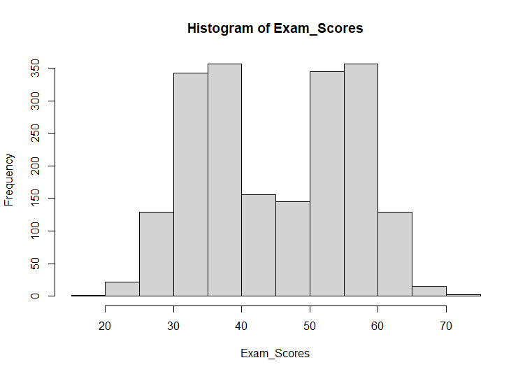
Right away, we can see some weirdness in this data – it is certainly not normally distributed, as we can see two humps rather than one (also known as a bimodal distribution). So, this is a quick way to see what’s going on with a single variable.
Another way we can examine data is through a boxplot (also known as a box and whisker plot). With a box plot, there’s typically a line in the middle denoting the mean. The rest of the scores are broken into 4 equally-sized groups (also known as quartiles). The middle quartiles are noted by the box, and the outer quartiles (the lowest and highest quartiles) are noted by the whiskers. Some programs also provide a symbol (like an asterisk) to indicate outliers or extreme scores that go way beyond the end of the whisker. This can be helpful for identifying incorrect or unusual data that might need to be addressed:
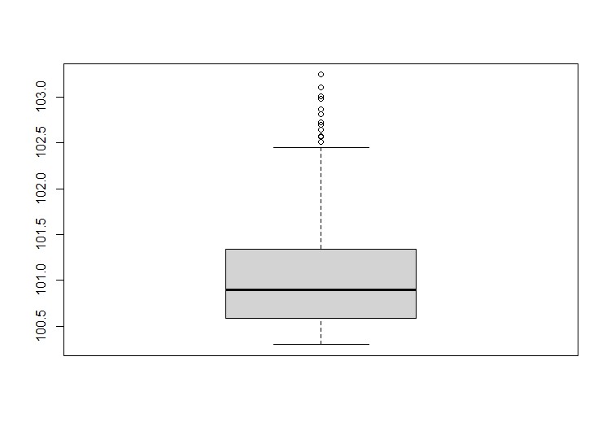
This example shows we have some skew in our data– the whisker on the bottom end is squashed, and the whisker at the top is quite long, with a trail of dots indicating some outliers.
Sometimes we might want to examine several groups at once. For example, maybe I want to look at the averages across three different groups. One way to do this is through a bar chart:
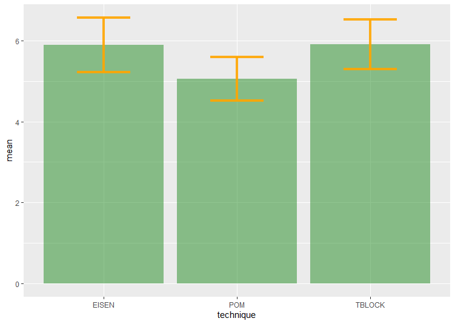
Here, the bar charts provide the average for each group. They also have an error bar – error bars can mean different things, so for this example, I’ve set it up to provide a 95% confidence interval for each mean.
Another similar option is the line chart:
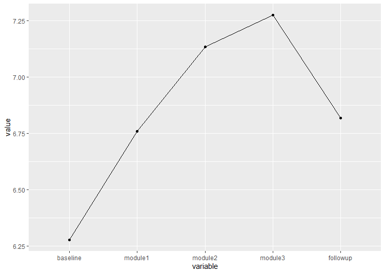
Each point provides the mean for each group, and some programs allow you to also provide an error range for those lines as well. Generally, we use bar charts when we’re trying to show differences between groups, and line charts if we are charting how something changes across time. This is not a hard and fast rule, so if you prefer one over the other, that’s fine.
Finally, if we wanted to see the relationship between two variables, a scatterplot is a helpful option:
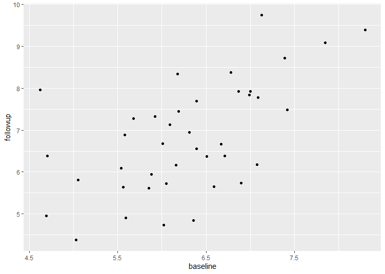
Here, we can see that there seems to be an upward trend, with those who get more sleep at the baseline measure also getting more sleep during the follow up.
I’m being very utilitarian right now, and showing you the plots I generally use to explore my data. If you are presenting to an audience, there are dozens of snazzy ways to present data. Looking up information on “data visualization” will give you plenty of creative ways to show off your data. But for our purposes, these four provide us with a lot of information about our data.
6.4 Resolving Issues
So, what do we do if we are violating an assumption? What do we do if our data looks funky? What you do really depends on a lot of things:
What does this variable usually look like?
How was it collected? Could there be problems with how we collected the data?
Is it possible some data is inaccurate and needs to be corrected?
Is the data coming from one source/group, or several?
Does the data need to be manipulated or transformed in some way?
What tests are we conducting, and are they sensitive to assumption violations?
Let’s walk through a few examples where my data looks weird and ways I might choose to approach it.
6.4.1 Example 1: Head size and math score
Imagine that I have collected some data by measuring my participants’ head size (circumference in inches) and their score on a 20-point math quiz. Here are my results:
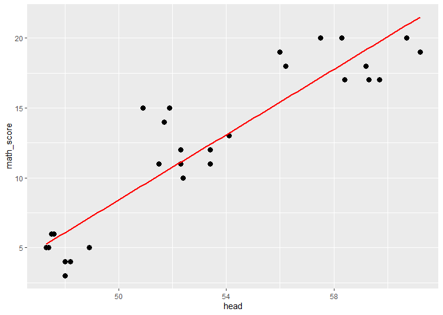
At first glance, this chart seems to be telling me a straightforward story – the bigger your head, the better you are at math, right? Not so fast! There might be some nuance to this data. Perhaps I learn that there are actually three different groups in this data set – toddlers, children, and adults. If I separate out these groups, I get a completely different story…
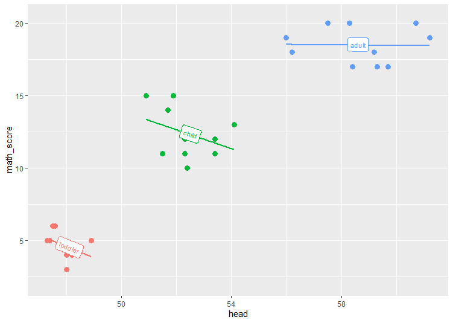
Oh, whoops! It turns out that age was a bit of a confounding variable here – when I separate out groups, suddenly what looked like a strong relationship is mostly an artifact of the different groups. Within groups, there’s a weak negative relationship between head size and math score. In fact, Figure 6.9 illustrates the Simpson paradox – when we combine data from different groups, it can obscure the effect going on within a group. So, always be careful about combining different groups!
6.4.2 Example 2: Scuba Diving
For our next example, let’s imagine that I’ve collected data on different sports experiences people have tried (you can find this data set here). I have this result when I ask people how many times my participants have gone scuba diving:
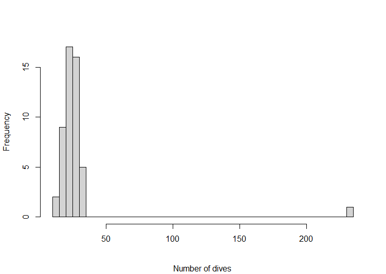
This is a pretty small sample, so I know that I’m not going to get a great looking normal distribution, but we have a pretty extreme value popping up here! It’s possible that this data point is a mistake – maybe this was an online survey, so the 234 might be a typo (perhaps they meant 23, or 24, or 34?) In this case, if I’m not sure, perhaps the safest approach is to simply trim the data by deleting the data point:
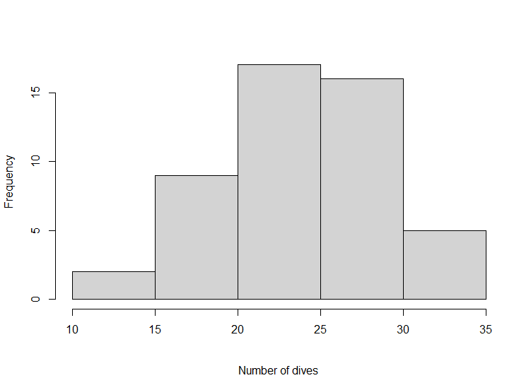
That seems to have cleared up the problem. However, let’s say that instead, I’m able to get in touch with this person, and they say the number is accurate because they are a scuba instructor! But I still have the problem with this value skewing my data – if I report the mean with this data point it is 28.22, and if I report it without this value, it is 24.02. So, I probably shouldn’t leave this value as is. But I have a small data set, and I would like to keep this person in the data set because their other data might prove instructive, but I can’t have her value be so extreme! Another option I can use is called winsorizing. When we winsorize a data point, we take an extreme value and replace it with a less-extreme value. There are a few different ways you might do this. One option is to find the next highest score (here, that would be 35) and make the extreme value just higher than that score. So in this case, we might replace the 234 with 36. Another option that is common is to use z-scores and replace the outlier with whatever is a z-score of 3. In this example, the z-score for this scuba instructor is 6.84, which is pretty extreme! So, instead I can take the mean (28.22) and use the data standard deviation (30.10… this is large due to that outlier!) to reassign the value:
\((3 \times 30.10?) + 28.22 = 121.3\)
So, I could replace that extreme value with 121, which is less extreme. Either ways is fine, but you absolutely must explain in your results that you have winsorized the data and how you have done so.
6.4.3 Example 3: Reaction time
For my third example, let’s imagine that I conducted a study on reaction times (data is here) and I have the following results:
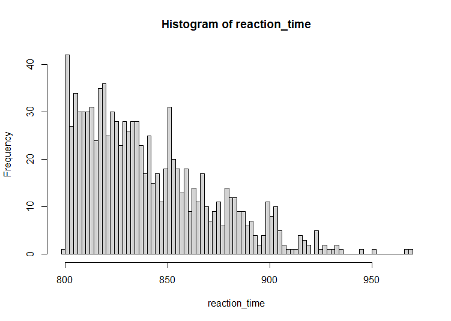
We can certainly see this data has a lot of positive skew! In some cases, this might be a cause for concern, but reaction time is just one of those variables that tends to be skewed. Humans can only be so fast, and there’s almost always a few slowpokes in the data set that lead to a long tail in the positive direction. Because this is such a common issue, almost every article on reaction time applies something called a transformation to the data. Transformations are ways we can manipulate the data to rescale it and push it towards more of a normal curve. There are many transformations out there (square root, reciprocal, and reverse hyperbolic to name a few) but the most common one we use on reaction times is a log transformation (that is, I take the natural log of this value). When I do that, here’s what my new histogram looks like:
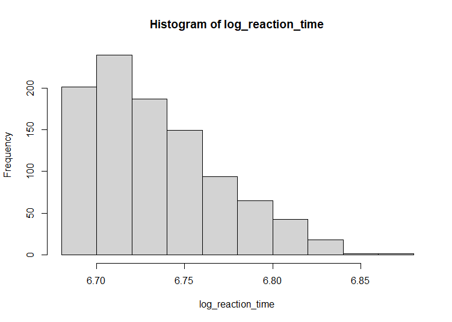
As you can see, the log transformation squashes that long tail down a bit to make it more normal. Here’s the issue though – when I do this, I can no longer call this variable “reaction time,” it has to be called “log reaction time” to remind my readers about the transformation. So if I want to talk about how sleep correlates with reaction time, I now have to talk about the correlation between “sleep and log reaction time” instead, which makes it harder for people to interpret in practical terms. So, transforming the data is sometimes more trouble than it’s worth. The benefit of applying a transformation is that you get a more accurate estimate of the population and whether your finding is statistically significant, but the downside is that it’s harder to interpret and explain.
There are no hard and fast rules for when to use a transformation. With my own data, I usually use the following approach to decide whether to use one:
Does my data have a lot of skew or kurtosis? If the skew/kurtosis is less than 2, I typically don’t worry too much about it. If the skew/kurtosis is greater than 2, I take a look at a histogram to see what’s causing the issue. If it’s an outlier, I made a decision about how to address the outlier. If it looks like the variable is just skewed in general and I think I need to address it, I would use a Kolmogorov-Smirnoff test to see if it is significant. If so, I might consider using a transformation.
Does my data have homoscedasticity? I take a look at a graph first (either a scatterplot or some boxplots/histograms) to see if it looks really heteroscedastic. If I’m concerned about it, I apply a Levene’s test to see if it is statistically significant.
Who needs to understand this data? If I’m working with a lay audience, the trade off for accuracy versus clarity is probably not worth a transformation. If I’m working with a scientific audience, or if I’m working with a variable that is often transformed (like salary or reaction time) then I am more likely to apply a transformation.
6.5 Ethics
While having no hard-and-fast rules when it comes to data cleaning gives us a lot of flexibility, it also can sometimes tempt people into bending the rules when it comes to statistics. There are plenty of gray areas out there, but here are a few things that I would advise against if you want to maintain a good code of ethics around data cleaning and analysis.
First, don’t falsify data! You’d think this would be obvious, but here in 2026, we’ve had a spate of fairly high-visibility cases of wholesale fabrication of data, as well as unexplained data manipulation. (I don’t want to name names, but if you want the hot gossip, datacolada.org has some fascinating articles about questionable data practices). So, don’t make up data! If you remove data points or replace them through winsorizing, be transparent about what you are doing and your rationale for doing so.
Second, establish a clear research plan and stick to it! If we are doing things completely above board, we should:
Have a specific hypothesis (or several hypotheses) we intend to test with our sample. We should know ahead of time whether our hypothesis is one- or two-tailed.
We should use a power analysis to establish what sample size we need to detect an effect size of interest. And we should stick to that number – we shouldn’t wrap up a project early once we get the findings we want, and we shouldn’t collect additional data with the goal of “making” something significant just by increasing power in our study.
If we are using a frequentist approach, this means that the p-value must be under .050 to be significant; technically, .051 is not less than .050, so we shouldn’t treat it as significant. Sharing effect sizes and confidence intervals can help our audience understand our findings with more nuance than we get with just plain null hypothesis significance testing.
If we are doing multiple tests, we should apply a Bonferroni correction where appropriate to avoid finding something significance based on chance. You will learn more about this in Section 8.1.
Do researchers fudge these details? Yeah, they probably do. Will you someday find yourself in a position where you engage in some not perfectly ethical behaviors? Maybe! But at least you should know when you’re doing something that is not above board. Hopefully, as researchers and journals demand more transparency and accountability, some of this will disappear. But I at least want you to know if you’re doing something you’re not supposed to do!!